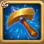

Guia do Evento O Tesouro Esquecido - Hero Wars: Dominion Era
- Por: Alexandre Domingos. .
Sob as areias do tempo, um tesouro escondido de vasos antigos aguarda ser descoberto. O evento Tesouro Esquecido convida você a assumir o papel de um arqueólogo destemido, desenterrando segredos há muito perdidos e tesouros imbuÃdos de energia mÃstica.
Neste emocionante evento por tempo limitado, os jogadores irão coletar Ferramentas de Arqueólogo, abrir relÃquias esquecidas e conquistar recompensas poderosas. É mais do que apenas tesouros é uma jornada ao coração da história oculta de Dominion.
Como Funciona o Evento Tesouro Esquecido
Para participar, você precisará de Ferramentas de Arqueólogo. Elas podem ser obtidas ao completar missões do evento ou adquiridas na loja do jogo. Uma vez obtidas, você pode usar essas ferramentas para inspecionar Vasos Antigos espalhados pela tela do evento.
Cada vaso contém recompensas aleatórias que vão desde Poções de Mascotes e PartÃculas do Caos até recursos raros de artefatos e muito mais. A emoção está no desconhecido você nunca sabe qual será o próximo tesouro que irá desenterrar!
1. Um Caçador de Fósseis Experiente
| Missão | Recompensa |
|---|---|
| Entrar 1 vez durante um evento especial |

Ferramenta de Arqueólogo x1
|
| Entrar 2 vezes durante um evento especial |
Ferramenta de Arqueólogo x1
|
| Entrar 3 vezes durante um evento especial |
Ferramenta de Arqueólogo x1
|
2. Famoso Mundialmente
| Missão | Recompensa |
|---|---|
| Obtenha 100 Pontos VIP |
Ferramenta de Arqueólogo x2
|
| Obtenha 500 Pontos VIP |
Ferramenta de Arqueólogo x5
|
| Obtenha 1.000 Pontos VIP |
Ferramenta de Arqueólogo x7
|
| Obtenha 2.000 Pontos VIP |
Ferramenta de Arqueólogo x10
|
| Obtenha 4.000 Pontos VIP |
Ferramenta de Arqueólogo x15
|
| Obtenha 7.000 Pontos VIP |
Ferramenta de Arqueólogo x20
|
| Obtenha 10.000 Pontos VIP |
Ferramenta de Arqueólogo x30
|
3. Taxas do Clube
| Missão | Recompensa |
|---|---|
| Faça 1 compra (esmeraldas, ofertas especiais, visuais, etc. incluÃdos) |
Ferramenta de Arqueólogo x2
|
| Faça 2 compras (esmeraldas, ofertas especiais, visuais, etc. incluÃdos) |
Ferramenta de Arqueólogo x2
|
| Faça 3 compras (esmeraldas, ofertas especiais, visuais, etc. incluÃdos) |
Ferramenta de Arqueólogo x3
|
| Faça 4 compras (esmeraldas, ofertas especiais, visuais, etc. incluÃdos) |
Ferramenta de Arqueólogo x3
|
| Faça 5 compras (esmeraldas, ofertas especiais, visuais, etc. incluÃdos) |
Ferramenta de Arqueólogo x5
|
| Faça 6 compras (esmeraldas, ofertas especiais, visuais, etc. incluÃdos) |
Ferramenta de Arqueólogo x7
|
| Faça 7 compras (esmeraldas, ofertas especiais, visuais, etc. incluÃdos) |
Ferramenta de Arqueólogo x9
|
4. Preparando-se para a Expedição
| Tarefa | Recompensa 1 | Recompensa 2 |
|---|---|---|
| Comprar 100 Esmeraldas | Ferramenta do Arqueólogo x1 |
 Esmeraldas x25 |
| Comprar 300 Esmeraldas | Ferramenta do Arqueólogo x1 |
Esmeraldas x50 |
| Comprar 1.000 Esmeraldas | Ferramenta do Arqueólogo x1 |
Esmeraldas x150 |
| Comprar 2.500 Esmeraldas | Ferramenta do Arqueólogo x1 |
Esmeraldas x300 |
| Comprar 5.000 Esmeraldas | Ferramenta do Arqueólogo x1 |
Esmeraldas x500 |
| Comprar 10.000 Esmeraldas | Ferramenta do Arqueólogo x1 |
Esmeraldas x1000 |
| Comprar 15.000 Esmeraldas | Ferramenta do Arqueólogo x1 |
Esmeraldas x1000 |
| Comprar 25.000 Esmeraldas | Ferramenta do Arqueólogo x1 |
Esmeraldas x2000 |
| Comprar 40.000 Esmeraldas | Ferramenta do Arqueólogo x1 |
Esmeraldas x3000 |
| Comprar 60.000 Esmeraldas | Ferramenta do Arqueólogo x1 |
Esmeraldas x4500 |
| Comprar 90.000 Esmeraldas | Ferramenta do Arqueólogo x5 |
Esmeraldas x7000 |
5. Caça ao Tesouro
| Tarefa | Recompensa |
|---|---|
| Gastar 100 Esmeraldas | Ferramenta do Arqueólogo x2 |
| Gastar 500 Esmeraldas | Ferramenta do Arqueólogo x4 |
| Gastar 1.000 Esmeraldas | Ferramenta do Arqueólogo x6 |
| Gastar 2.500 Esmeraldas | Ferramenta do Arqueólogo x8 |
| Gastar 5.000 Esmeraldas | Ferramenta do Arqueólogo x10 |
| Gastar 10.000 Esmeraldas | Ferramenta do Arqueólogo x15 |
| Gastar 20.000 Esmeraldas | Ferramenta do Arqueólogo x20 |
| Gastar 30.000 Esmeraldas | Ferramenta do Arqueólogo x25 |
| Gastar 50.000 Esmeraldas | Ferramenta do Arqueólogo x30 |
| Gastar 70.000 Esmeraldas | Ferramenta do Arqueólogo x40 |
| Gastar 100.000 Esmeraldas | Ferramenta do Arqueólogo x50 |
| Gastar 150.000 Esmeraldas | Ferramenta do Arqueólogo x100 |
6. Escavação Energética
| Tarefa | Recompensa |
|---|---|
| Gastar 100 de Energia | Ferramenta do Arqueólogo x1 |
| Gastar 250 de Energia | Ferramenta do Arqueólogo x1 |
| Gastar 500 de Energia | Ferramenta do Arqueólogo x1 |
| Gastar 1.000 de Energia | Ferramenta do Arqueólogo x1 |
| Gastar 1.500 de Energia | Ferramenta do Arqueólogo x1 |
| Gastar 2.500 de Energia | Ferramenta do Arqueólogo x1 |
| Gastar 3.500 de Energia | Ferramenta do Arqueólogo x1 |
| Gastar 4.500 de Energia | Ferramenta do Arqueólogo x1 |
| Gastar 6.000 de Energia | Ferramenta do Arqueólogo x2 |
| Gastar 8.000 de Energia | Ferramenta do Arqueólogo x4 |
| Gastar 10.000 de Energia | Ferramenta do Arqueólogo x6 |
| Gastar 12.000 de Energia | Ferramenta do Arqueólogo x8 |
| Gastar 15.000 de Energia | Ferramenta do Arqueólogo x12 |
| Gastar 18.000 de Energia | Ferramenta do Arqueólogo x20 |
7. Explorando o Ambiente
| Tarefa | Recompensa |
|---|---|
| Abrir 10 Baús na Torre | Ferramenta do Arqueólogo x1 |
| Abrir 20 Baús na Torre | Ferramenta do Arqueólogo x1 |
| Abrir 40 Baús na Torre | Ferramenta do Arqueólogo x1 |
| Abrir 60 Baús na Torre | Ferramenta do Arqueólogo x1 |
| Abrir 80 Baús na Torre | Ferramenta do Arqueólogo x1 |
| Abrir 100 Baús na Torre | Ferramenta do Arqueólogo x1 |
| Abrir 120 Baús na Torre | Ferramenta do Arqueólogo x5 |
8. Civilizações Perdidas
| Tarefa | Recompensa |
|---|---|
| Iniciar ou Participar de 1 Aventura de Mascote | Ferramenta do Arqueólogo x1 |
| Iniciar ou Participar de 2 Aventuras de Mascote | Ferramenta do Arqueólogo x1 |
| Iniciar ou Participar de 3 Aventuras de Mascote | Ferramenta do Arqueólogo x1 |
| Iniciar ou Participar de 4 Aventuras de Mascote | Ferramenta do Arqueólogo x1 |
| Iniciar ou Participar de 5 Aventuras de Mascote | Ferramenta do Arqueólogo x1 |
| Iniciar ou Participar de 6 Aventuras de Mascote | Ferramenta do Arqueólogo x1 |
| Iniciar ou Participar de 7 Aventuras de Mascote | Ferramenta do Arqueólogo x5 |
Recompensas Principais do Evento
| Item | Descrição |
|---|---|
|
Ferramenta do Arqueólogo |
Obtenha Ferramentas do Arqueólogo e inspecione os Vasos Antigos que encontrar. |
|
Esmeraldas |
A principal moeda do Hero Wars. |
O Tesouro Esquecido: Usando a Ferramenta do Arqueólogo
Neste evento empolgante, você usará a Ferramenta do Arqueólogo para inspecionar diversos vasos antigos. Cada vaso guarda recompensas valiosas, e você terá a chance de abrir a recompensa principal ou múltiplos itens. Explore o mistério por trás de cada vaso e conquiste seus tesouros!


Conclusão
O evento Tesouro Esquecido oferece uma aventura emocionante repleta de mistérios e recompensas valiosas. Usar a Ferramenta do Arqueólogo para descobrir vasos antigos permite que você mergulhe nos segredos de Hero Wars: Dominion Era. Seja estratégico, abra seus vasos com sabedoria e conquiste os tesouros que aguardam por você. Cada descoberta o aproxima de artefatos poderosos e fortalece sua jornada no jogo. Não perca essa oportunidade incrÃvel de aprimorar seus heróis e dominar os campos de batalha!
Você pode ter interesse:
 Guia Definitivo de Mascotes - Hero Wars: Dominion Era
Guia Definitivo de Mascotes - Hero Wars: Dominion Era
 Guia Completo dos Mapas de Aventura dos Mascotes - Hero Wars: Dominion Era
Guia Completo dos Mapas de Aventura dos Mascotes - Hero Wars: Dominion Era
Deixe Sua Opinião!
Você gostou do nosso Guia do Evento Tesouro Esquecido para Hero Wars Web e Facebook? Há algo que não entendeu ou gostaria de sugerir mudanças? Convidamos você a se juntar à nossa sessão de comentários na página do Alexandre Games Blog. Não hesite em expressar sua opinião, clarificar suas dúvidas e compartilhar sua sugestões.
Clique no botão abaixo para começar: